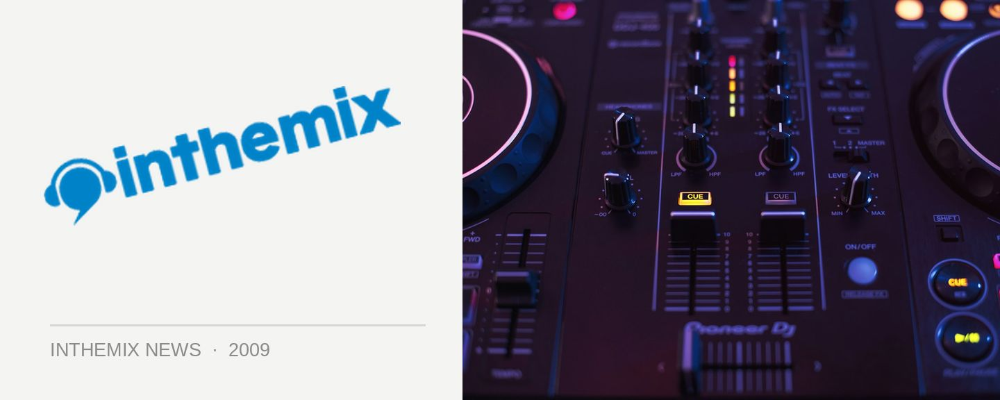

Pendulum discuss dreaded "second album syndrome"
The benefit of hindsight can be a beautiful thing. Perth drum n’ bass titans Pendulum will be returning home shortly over New Years to play a run of gigs where they’ll debut material off their forthcoming new album, and speaking to ITM recently, founding member Gareth McGrillen offered a few frank confessions on the difficulties they experienced with getting their second album In Silico finished and released to the public.
“Obviously, In Silico was what it was. It did the job and it really threw us into that mainstream crossover area we wanted to go to, and it did express where we were going,” Gareth told ITM. “But as an album it was a fucking nightmare! It nearly killed both of us.”
Pendulum had already come clean earlier this year about the pressures they’d faced, describing the process as an “identity crisis wrapped up in a nervous breakdown”, and Gareth claims the dreaded ‘second album syndrome’ was well and truly in effect. “The funny part was, we went into that album with the full knowledge of it; if no one had told us there was something such as ‘second album syndrome’, we probably wouldn’t have worried about it. I think we actually caused it ourselves by worrying about it so much; it’s as if it was self-inflicted.”
The main side effect of Pendulum’s studio nightmares was just how long it took them to get the album completed. “Other than that, we got to the finish line and it did the job we wanted it to.” Gareth says it’s been a different story completely with album #3. “So far, this album has been an absolute pleasure. It’s been fun to get back into the studio and work on.”
Stay tuned for news on what we can expect from Pendulum’s upcoming new album, as well as ITM’s full length audio interview. Catch them in the flesh at the following shows:
Fri Dec 18th – Brown Alley, Melbourne
Sat Dec 19th – Halo, Hobart
Sat Dec 26th – Metro City, Perth
Wed Dec 30th – Phat, Nelson (NZ)
Thur Dec 31st – Harbour Party NYE Luna Park, Sydney
Fri Jan 1st – Summadayze, Adelaide